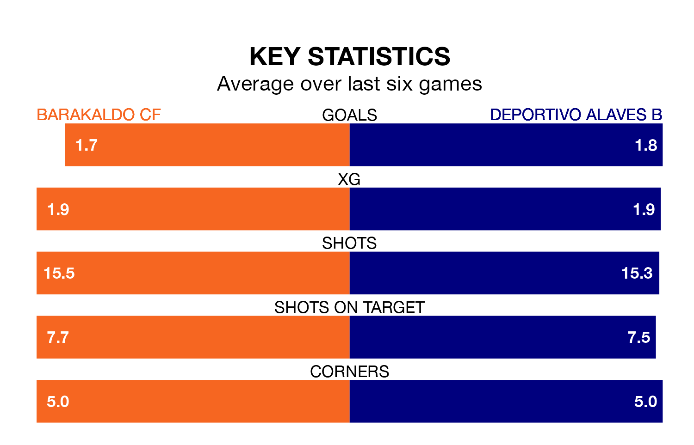

Sunday's late match between Barakaldo CF and Deportivo Alaves B promises to be one for the neutrals, as two of the Segunda División RFEF Group 2's most free-scoring sides go head-to-head.
Ahead of the game at the Estadio Nuevo Lasesarre, Barakaldo and Deportivo Alaves B sit fourth and third in the goal-scoring charts, with 51 and 52 goals respectively.
Striker Xabier Cortezón Goikoetxea leads the way for the home side, having bagged five goals in their 31 games to date.
And Unai Ropero has been the main man in the opponents' penalty box for Deportivo Alaves B, with 14 goals.
Barakaldo are second in the table after 31 games, of which they have won 19 and drawn 10, earning 67 points.
Deportivo Alaves B are four places behind the home side in sixth, with 15 wins and four draws putting them on 49 points.
In the last 10 years, Barakaldo and Deportivo Alaves B have played each other on seven occasions. Barakaldo won two of them, Deportivo Alaves B four, and they drew once.
On average, Barakaldo scored 1.6 goals and Deportivo Alaves B 1.9 in those matches.
Their last meeting was on December 10, when Barakaldo won 2-1 away.
Barakaldo are in good form in the Segunda División RFEF Group 2, with four wins and a draw from their last six games.
With two wins and a draw over that period, the visitors' form is much worse – they have taken seven points from 18, compared to Barakaldo's 13.
Barakaldo's last match was on April 13, a 3-1 win against CD Valle Egüés, with Cortezón Goikoetxea, Pablo Santiago López and Íñigo Orozco Andonegi getting the goals for Barakaldo.
Deportivo Alaves B lost 1-0 against Arenas de Getxo last time out, on April 14.
Updated: 15:40 (UTC), 18/04/24